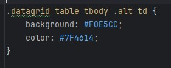

In de foto hieronder ziet u dat er van een andere achtergrondkleur werd voorzien.
.onbekend {background-color:red;} heeft geen effect als je deze toepast op een td cel, in een tr rij met class="alt" maar wel in een tr rij zonder deze 'alt' class, omdat de specificiteit bij de alt klasse veel groter (specifieker) is dan bij de .onbekend klasse.
Daarom heeft de alt klasse dus ook voorrang op de .onbekend klasse.